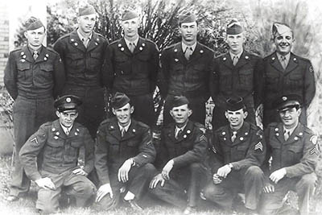

Fish Haven, Idaho

Weather Summary
- Current Temperature: °F
- High: °F
- Humidity: %
- Wind Speed: 17 mph
- Wind Chill: °F
Five Day Forecast
Preston City hears FCMC update, approves 'PHS Drive'
Local veterans were thanked by Preston Mayor Dan Keller during the Nov. 9 City Council meeting. “Our monument across the street at the courthouse gives you a real reflection, at least it does me, of the number of citizens from our area that served our country in the line of duty, and many of them gave their lives in doing that.”
He also noted the Preston High School Cross Boys Cross Country team’s recent state title, the girls’ team that finished a close second, and the West Side High School Volleyball team’s state title. City attorney Lyle Fuller’s son runs on the PHS Cross Country team and city police officer Scott Royer’s wife, Malinda, coaches the WS volleyball team. Keller’s daughter is Royer’s assistant coach.
He thanked members of the local fire department, ambulance crew and police department who escorted the teams into town.
The city then refunded half of a swale bond to Ryan Harris, and listened to an update on the Franklin County Medical Center.
“We have a very ambitious vision for FCMC. We want to be the absolute preferred provider for all medical services in our area. FCMC is the largest employer in the county and certainly in the city,” said Richard Westerberg, chairman of the FCMC Board of Directors.
Part of the FCMC’s vision is economics, he said. “To the extent that we can capture the medical services that we know are leaving our community and going other places then we will be able to add jobs, payroll, and all those good things to our community,” he said.
Read More
Contact Info
- 555-555-5555
- idecweathers@email.com